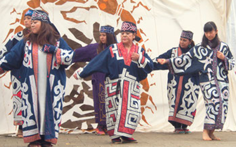
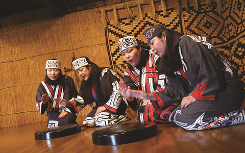
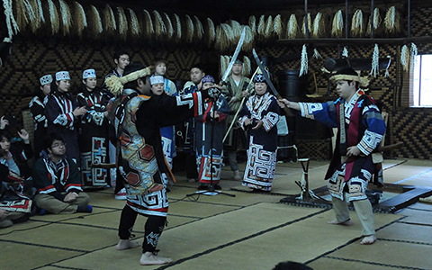

アイヌ踊り
アイヌの歌と踊り
・アイヌの伝統的な歌や踊りは、人々の日常生活の中で受け継がれてきました。 儀式の時に演じられるものや、労働の時に歌うもの、娯楽として歌ったり踊ったりする ものなど、種類はさまざまですが、いずれも、専門的な作曲家や舞踊家に よって作られたり、演じられたりしたものではありませんでした。
・白老地方では、儀式や宴席で行われるものは、「ウポポ（座り歌）」と 「リムセ（踊り歌）」を基本としており、多くは集団で踊られます。
・ウポポは、女性が輪になって座り、漆塗りの器であるシントコ（行器＝ほかい） のふたを叩いて調子をとりながら歌うものです。 様々な踊りが始まる導入として、場の雰囲気を盛り上げる役目を持つとされます。
・リムセは、踊りに合わせて歌われる歌とその踊りをいいますが、もともとは 「ドシンと音をたてる」という意味です。村になにか変事があった時に、 村人が隊列を組み、刀を上下にふりかざし、足を踏みならしなながら行進する 悪魔払いの行進が、その元になっていると考えられています。
・たとえば、イオマンテ（クマの霊送り）では、神の旅立ちを祝い、 儀礼の進行にともなって様々な踊りが踊られますが、さらに夜更けに及ぶ宴においては、 場の盛り上がりとともに人々が次第に立ち上がり、大きな輪になって大勢で踊る 「イオマンテリムセ（熊の霊送りの踊り）」が始まります。
・「エムシリムセ（刀の踊り）」も、魔を祓う目的で儀式の際に踊られるものだといいます。 男性が力強く刀を振りかざし、勇ましいかけ声とともに、相対する者が刀を激しく ぶつけ合ったり、ときには家の梁を叩いたりするもので、たいへん勇壮な踊りです。 「クリムセ」といわれる弓の踊りも、同じく男性によって踊られます。
・宴の余興として踊られるものに、輪になった女性が、 お盆を回し合ったりして競う踊り「オッチケリムセ（盆送りの踊り）」などがあります。
・このほか、鶴や雨ツバメなどの鳥や、キツネ、ウサギ、ネズミなど、 動植物をモチーフとした踊りが、たくさんあります。
・このような踊りや歌は、現在の北海道の各地に伝承されており、 地方ごとの特徴を持っています。
・近年、アイヌ文化復興の機運のなかで、伝統的芸能の保存会活動が活発に 行われるようになっています。現在、これらの保存会のうち１７団体の伝承する舞踊が、 国の重要無形民俗文化財に指定されています。